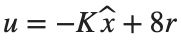
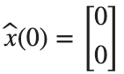
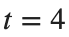

State Feedback과 Observer
실행 조건
MATLAB · Control System Toolbox
학습 목표
위치만 측정하는 시스템에서 속도를 추정해 제어하고, 추정 속도와 잡음 민감도를 함께 비교합니다.
측정값으로 상태를 구분할 수 있는가
시작 조건
위치[m]·속도[m/s]를 상태로 하는  ,
,  입니다.
입니다.  ,
,  ,
,  을 사용합니다.
을 사용합니다.
진행 방법
- 가제어 행렬 [B,AB]와 가관측 행렬 [C;CA]를 만들고 rank를 구하세요.
- B를 영벡터로 바꾼 경우와 인 경우를 각각 비교하세요.
- 입력이 작용하지 않는 경우와 측정이 없는 경우를 구분해 설명하세요.
남길 결과
- 세 조건의 두 rank와 가능한 설계의 비교표.
A=[0 1;-2 -3]; B=[0;1]; C=[1 0];
cases={{B,C},{zeros(size(B)),C},{B,zeros(size(C))}}; names={'base','no input','no sensor'};
for i=1:numel(cases)
inputs=cases{i}; b=inputs{1}; c=inputs{2};
fprintf('%s: Controllability rank %d, Observability rank %d\n',names{i},rank(ctrb(A,b)),rank(obsv(A,c)));
end
% TODO: 각 조건에서 가능한 제어·추정 설계를 적으세요.
결과 기록·자가 점검
조건 | |
Controllability rank | |
Observability rank | |
설계 가능 여부 |
확인할 점
- 기준 모델의 두 rank가 모두 2인가?
- rank가 부족한 모델에 Pole placement를 그대로 적용하지 않았는가?
State Feedback과 Observer를 연결하기
시작 조건

, 입니다. 제어 Pole은 −2,−4, Observer Pole은 −8,−10입니다.
입니다. 제어 Pole은 −2,−4, Observer Pole은 −8,−10입니다. 
입니다.진행 방법
- K와 L을 계산하고 , 의 고유값을 대조하세요.
- 실제 상태와 추정 상태를 동시에 적분해 0–4 s의 위치·속도와 추정 오차를 그리세요.
- 추정 오차가 줄어드는 과정과 출력이 목표값으로 가는 과정을 구분하세요.
남길 결과
- 위치·추정 위치, 속도·추정 속도의 두 그래프와 최종 추정 오차.
K=place(A,B,[-2 -4]); L=place(A',C',[-8 -10])';
a_aug=[A -B*K;L*C A-B*K-L*C]; b_aug=[8*B;8*B]; t=linspace(0,4,801)';
z=lsim(ss(a_aug,b_aug,eye(4),zeros(4,1)),ones(size(t)),t,[1;0;0;0]);
figure; tiledlayout(2,1);
nexttile; plot(t,z(:,1),t,z(:,3),'--'); ylabel('Position [m]'); legend('state','estimate'); grid on
nexttile; plot(t,z(:,2),t,z(:,4),'--'); ylabel('Linear Velocity [m/s]'); xlabel('Time [s]'); legend('state','estimate'); grid on
disp(norm(z(end,1:2)-z(end,3:4)));
% TODO: Controller·Observer의 Pole을 각각 출력해 대조하세요.
결과 기록·자가 점검
K | |
L | |
제어 Pole | |
Observer Pole | |
최종 오차 |
확인할 점
- 계산한 K, L을 대입한
 ,
,  의 Eigenvalue가 각각 지정한 제어 Pole과 Observer Pole에 일치하는가?
의 Eigenvalue가 각각 지정한 제어 Pole과 Observer Pole에 일치하는가? 
s에서 위치·속도의 추정 오차가 각각 1e-6 m, 1e-6 m/s보다 작은가?
Observer를 빠르게 하면 항상 좋은가
시작 조건
측정에 n(t)=0.02*sin(40*t)를 더합니다. Observer Pole (−8,−10), (−20,−25)를 비교하고 제어기 K는 고정합니다.
진행 방법
- 실습용 노트북의 함수에 두 Observer 설정을 넣고 같은 시간축에서 제어입력 u를 비교하세요.
- 1 s 이후의 위치 오차 RMS, 속도 오차 RMS, 제어입력 RMS를 각각 구하세요.
- 초기 추정 오차의 수렴과 측정 잡음에 대한 반응을 별개로 해석하세요.
남길 결과
- 제어입력 곡선과 세 RMS의 비교표, 선택할 설정의 근거.
figure; hold on
for poles={[-8 -10],[-20 -25]}
[u,err,rms_u]=noisyObserver(poles{1},A,B,C,K,t);
plot(t,u,'DisplayName',mat2str(poles{1})); disp(poles{1}); disp(err); disp(rms_u);
end
xlabel('Time [s]'); ylabel('u [N]'); legend; grid on
% TODO: 지표를 근거로 Observer 설정을 선택하고 이유를 적으세요.
function [u,err,rms_u]=noisyObserver(poles,A,B,C,K,t)
L=place(A',C',poles)'; aa=[A -B*K;L*C A-B*K-L*C];
bb=[8*B zeros(2,1);8*B L]; inputs=[ones(size(t)) .02*sin(40*t)];
z=lsim(ss(aa,bb,eye(4),zeros(4,2)),inputs,t,[1;0;0;0]);
u=8-z(:,3:4)*K'; keep=t>=1;
err=sqrt(mean((z(keep,1:2)-z(keep,3:4)).^2,1)); rms_u=sqrt(mean(u(keep).^2));
end
결과 기록·자가 점검
Observer Pole | |
위치 오차 RMS [m] | |
속도 오차 RMS [m/s] | |
입력 RMS [N] | |
선택 근거 |
확인할 점
- 두 설정의 잡음·Initial Condition·시간 간격이 같은가?
- 오차와 입력을 한 지표로 혼동하지 않았는가?